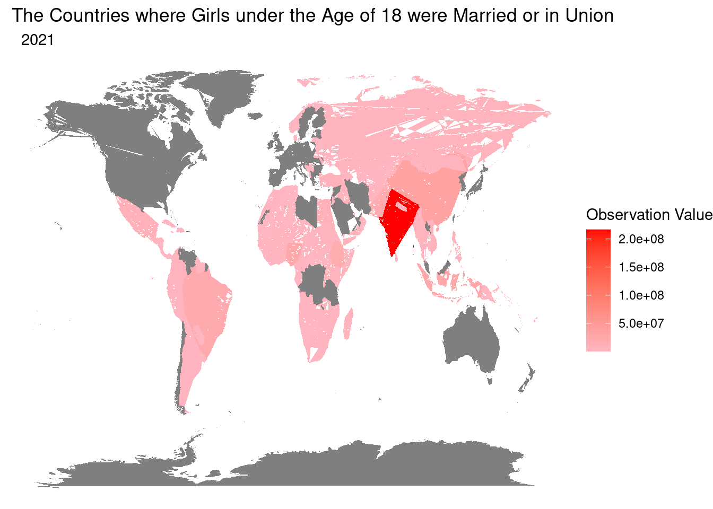
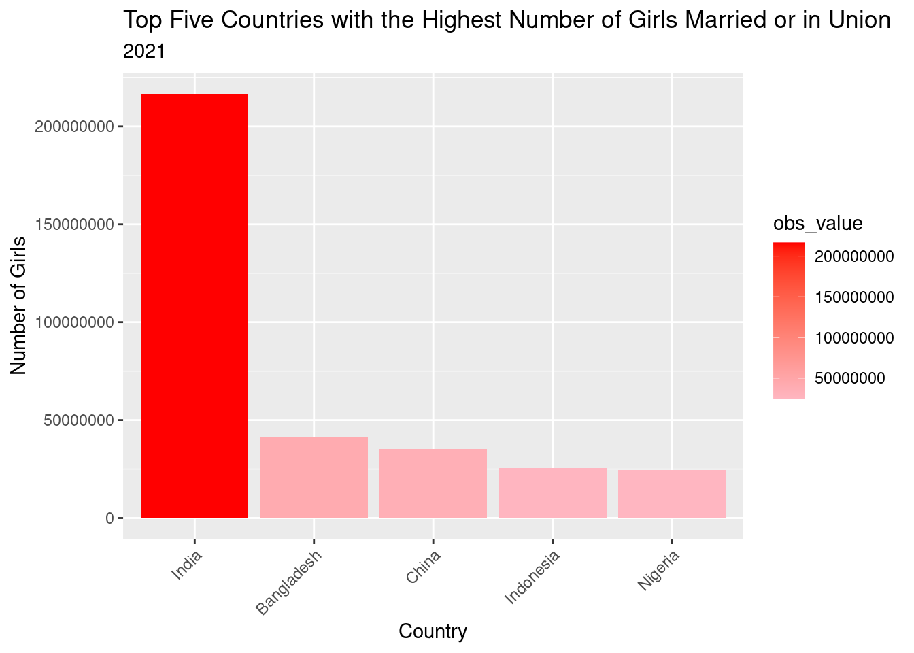
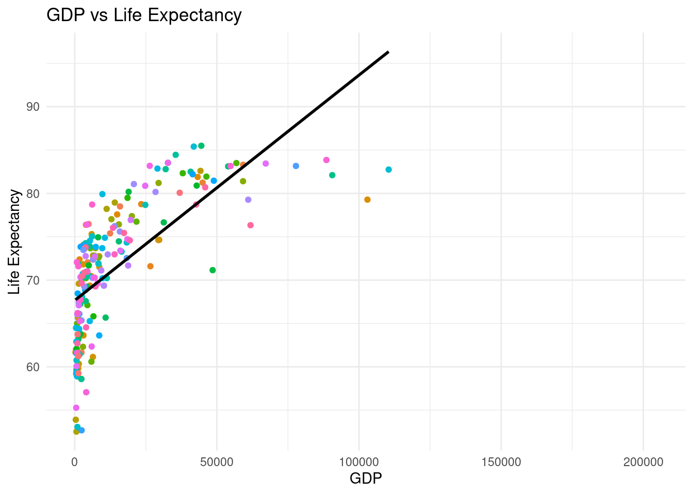
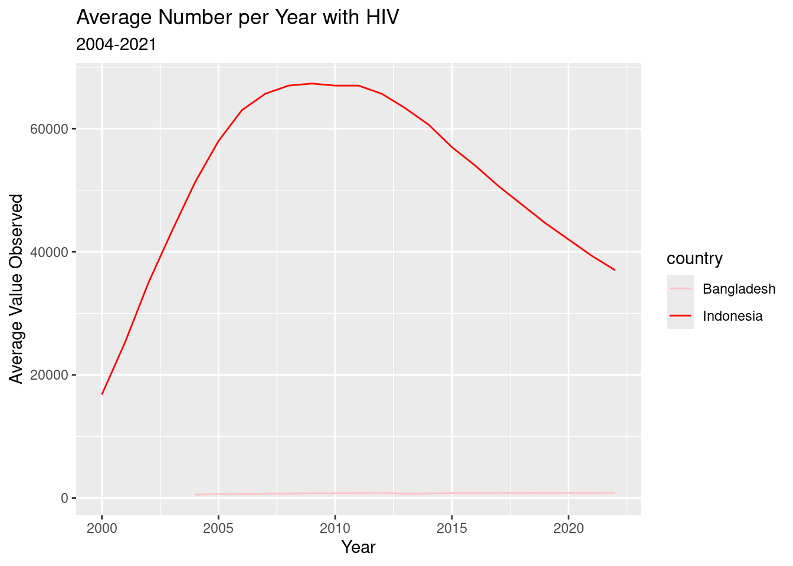

Children. Not Wives.
A glimples at the stark realities of the United Nations Indicators

As some countries move and progress towards equality and freedom, others are left behind. A recent study by UNICEF, 2021, identified that many young girls and women are first married or in union before the age of 18. The truths and realities of the situation needs to be exposed and girls must be helped. Children are meant to be children. Girls under 18 should be cared for and loved by their families, not preparing for a family of their own. This report aims to reveal and educate you on the stark reality of underage marriages around the world.
World Map
This map is a snapshot of the 2021 United Nations investigation into the Number of Girls Married or in Union Before the Age of 18 Around the World. The darker the colour, the higher the number.
Bar Chart

This bar chart highlights the top five countries that had the highest number of girl married or union before the age of 18 in 2021 according to the United Nations. Investigating further into Bangladesh. According to the United Nations this is a developing country with a below average GDP. Poverty and a lack of education are two reasons why child marriages occur and prehaps a reason for the high level of girls married or in union before the age of 18 in Bangladesh.
Scatter Plot

This scatter plot highlights the correlation between the GDP and the Life Expectancy of the countries where there are girls marired or union before the age of 18 in 2021. It must be questioned and perhaps there needs to be further research into the relationship between the GDP, life expectancy and the number observed.
Time Series

This time series chart shows two of the countries where girls are marrired or union before the age of 18 in 2021 and highlights the average number living with HIV from 2004 to 2021.
Other Reasons for Child Marriages
Gender inequality
Poverty
Lack of Education
Insecurity
Social Norms
How do we end Child Marriages?
Increase girls’ access to education and support
Educate parents and communities
Enforce laws
Listen to Habiba and her story
She is only one of millions.
As part of the United Nations Sustainable Development Goals, there is an aim to end child marriage by 2030. That is only six years away and nine years since this data was collected. From this report, we have seen that child marriage is prevalent in today’s society. Drastic measures will need to be taken as child marriage happens for several reasons and there is no simple fix. We cannot continue to turn a blind eye to these young girls that suffering and are pressured into marriage and union.
Child marriage is nothing short of cruel, exploitive and oppressive.